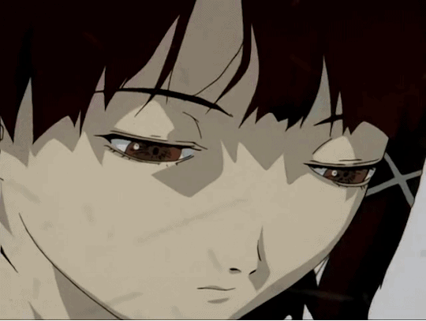

V – Distortion
Summary
Lain sees people around her losing touch with reality. A boy experiences visions before jumping from a train platform. Lain’s presence in the Wired grows stronger and stranger
Key Theme
Mental Collapse & Truth
The borders between the Wired and real world are cracking. Truth is unstable—and dangerous.
Moment
“ Reality is just a consensus ”

— Lain